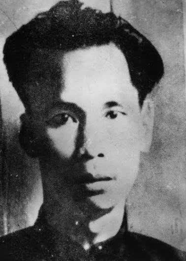
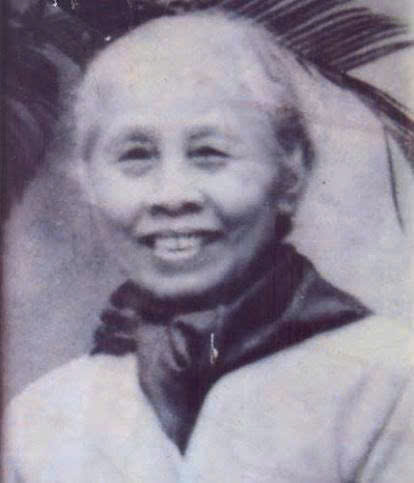
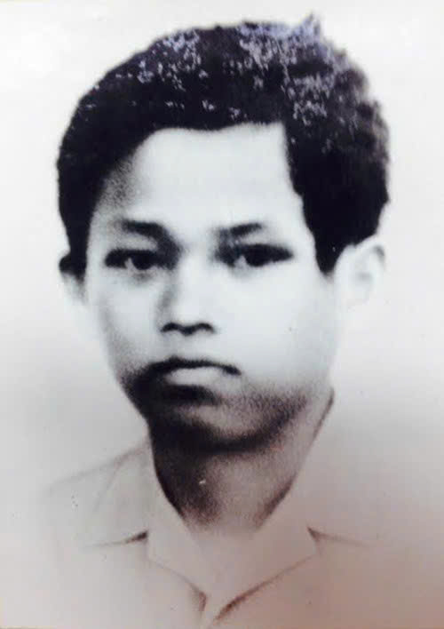

Các thành viên của Đoàn khi mới thành lập
Đoàn Thanh niên Cộng sản Hồ Chí Minh khi mới thành lập (26/3/1931) có 8 đoàn viên đầu tiên. Đây là các thanh niên được Bác Hồ và Hội Việt Nam Cách mạng Thanh niên bồi dưỡng tại Quảng Châu, Trung Quốc, bao gồm:
Lý Thúc Chất

Thông tin cơ bản:-Thành viên lớp thanh niên đầu tiên tại Quảng Châu.
-Tham gia truyền bá tư tưởng cách mạng về Việt Nam.
-Tài liệu về cuộc đời sau này còn hạn chế.
Lý Phương Thuận

Thông tin cơ bản:-Được đào tạo trực tiếp trong phong trào thanh niên cách mạng.
-Hoạt động chủ yếu trong giai đoạn đầu của phong trào cách mạng Việt Nam.
-Ít tư liệu chính thống còn lưu giữ.
Lý Tự Trọng

Thông tin cơ bản:-Là một trong những thanh niên được bồi dưỡng tại Quảng Châu trong phong trào cách mạng do lãnh tụ Hồ Chí Minh tổ chức.
-Tham gia hoạt động cách mạng tại Sài Gòn đầu những năm 1930.
-Năm 1931, bị thực dân Pháp bắt và xử tử khi mới 17 tuổi.
-Được ghi nhận là tấm gương tiêu biểu của tuổi trẻ Việt Nam trong giai đoạn đầu phong trào cách mạng.
Lý Anh Tự
Thông tin cơ bản:
-Là một trong những thanh niên được cử sang Quảng Châu học tập.
-Được huấn luyện về lý luận và tổ chức cách mạng.
-Sau thời gian hoạt động bí mật, tài liệu lịch sử ghi chép về ông còn khá hạn chế.
Lý Phương Đức
Thông tin cơ bản:
-Tham gia lớp huấn luyện thanh niên do Nguyễn Ái Quốc tổ chức.
-Được giao nhiệm vụ hoạt động tuyên truyền trong nước.
-Thông tin cụ thể về năm sinh, năm mất chưa được công bố rộng rãi.
Lý Nam Thanh
Thông tin cơ bản:
-Thuộc lớp thanh niên tiên phong đầu tiên.
-Sau quá trình huấn luyện, tham gia gây dựng cơ sở cách mạng trong nước.
Lý Văn Minh
Thông tin cơ bản:
-Là một trong 8 đoàn viên đầu tiên.
-Tham gia hoạt động tổ chức và truyền bá tư tưởng cách mạng.
-Tài liệu lịch sử về cá nhân chưa được phổ biến rộng rãi.
Lý Trí Thông
Thông tin cơ bản:
-Thành viên trong nhóm thanh niên đầu tiên do Nguyễn Ái Quốc đào tạo.
-Góp phần vào công tác tổ chức ban đầu của phong trào thanh niên cách mạng.